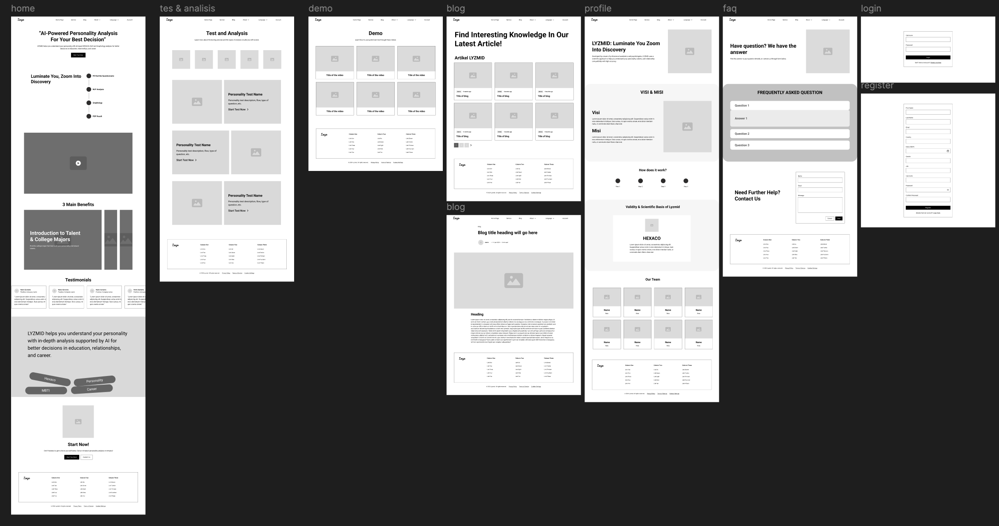
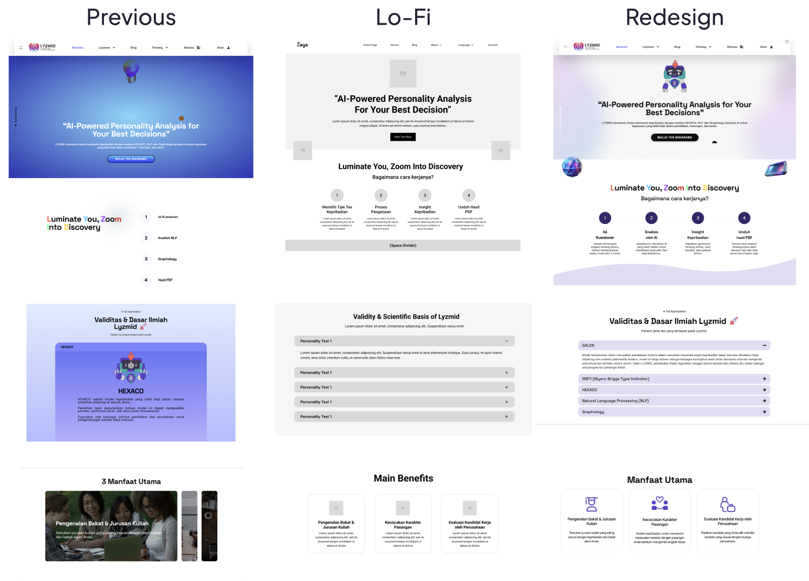
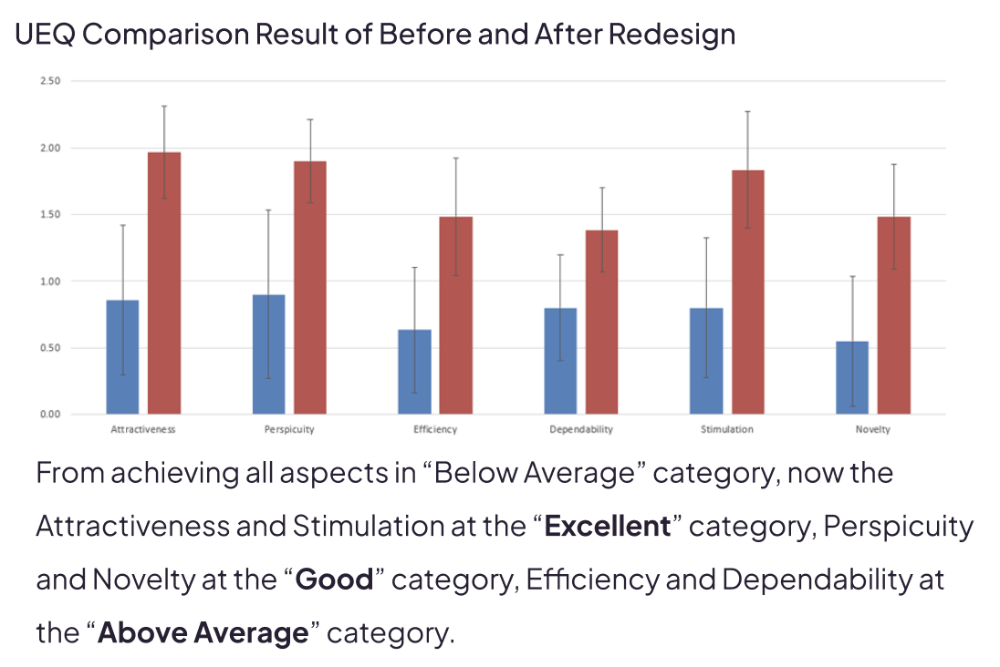
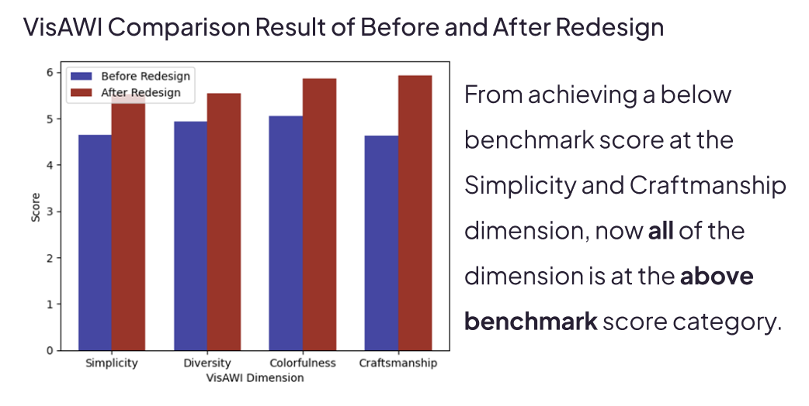
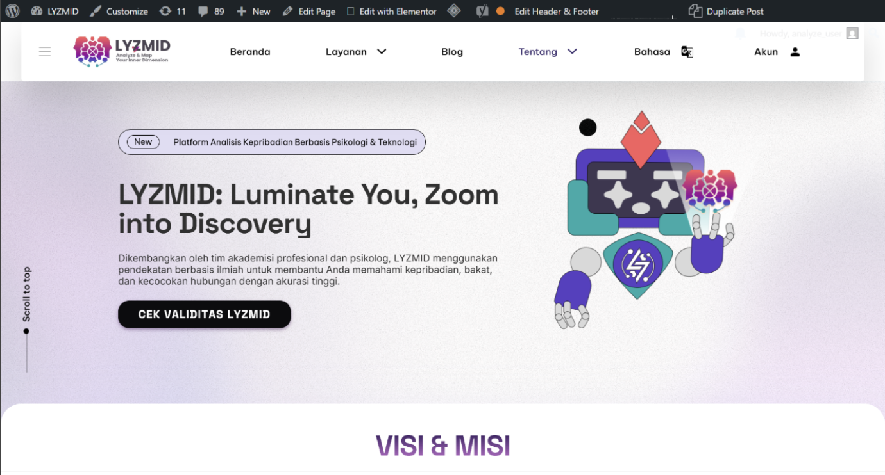

LYZMID

Project Overview
LYZMID is a multilingual personality analysis website designed to help users explore their personality traits through interactive and entertaining tests. The platform supports three languages — Indonesian, Korean, and English — making the experience accessible to a wider audience with different cultural backgrounds.
The website provides several personality test categories such as MBTI, NLP, GALEN, and other self-exploration tests presented through a clean and engaging interface. The project focused on creating an experience that feels fun, visually approachable, and easy to navigate despite the complexity of multilingual content structures.
As the UI/UX Designer and WordPress Developer, I contributed to the interface design, multilingual page structure, interaction flow, and website implementation using WordPress. I also participated in usability evaluation and redesign improvements using UEQ and VISAWI methodologies.
The Problem
Multilingual UX & User Engagement Challenges
Designing a personality testing platform across multiple languages introduced challenges in navigation consistency, readability, visual hierarchy, and maintaining engaging interactions for users from different backgrounds.
The initial interface lacked consistency between language versions and had several usability issues that affected user engagement. The redesign process focused on improving accessibility, simplifying navigation, and creating a more visually appealing user experience while maintaining functional clarity across all test categories.
Design Process
The redesign process combined user-centered design methodologies with usability evaluation techniques to improve both the visual experience and interaction quality of the platform.
Research & Content Structuring
Analyzed user behavior, multilingual navigation patterns, and existing website pain points. Organized personality test categories and language structures to improve accessibility and reduce user confusion.
Wireframing & Information Architecture
Created wireframes and navigation structures focused on readability, multilingual consistency, and smoother test exploration flows for users across different devices.

Visual Redesign
Redesigned the interface using cleaner layouts, improved spacing systems, consistent typography, and more engaging visual components to create a modern and approachable user experience.

UEQ & VISAWI Testing
Conducted user evaluation using UEQ (User Experience Questionnaire) and VISAWI (Visual Aesthetics of Websites Inventory) to measure user satisfaction, usability perception, and visual appeal. The findings were used to refine interaction flows, visual hierarchy, and overall interface quality.


WordPress Development
Implemented the final website design using WordPress and Elementor, ensuring responsive layouts, multilingual compatibility, and smoother user interactions across desktop and mobile devices.

My Contributions
- Designed multilingual website interfaces for Indonesian, Korean, and English users.
- Created cleaner navigation systems and improved information hierarchy.
- Conducted usability and visual aesthetic evaluations using UEQ and VISAWI.
- Developed website pages and layouts using WordPress and Elementor.
- Improved responsive experience across desktop and mobile platforms.